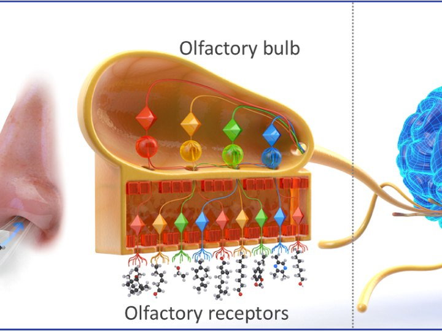
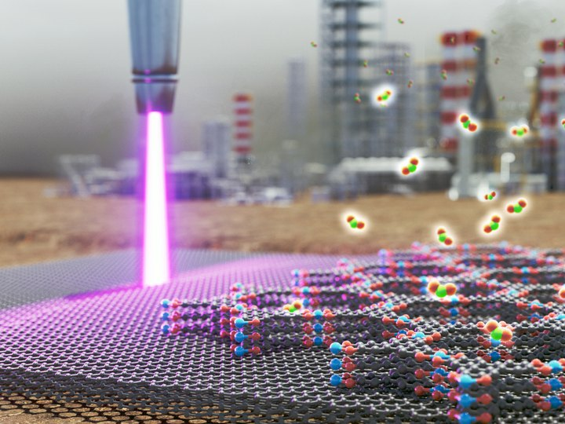
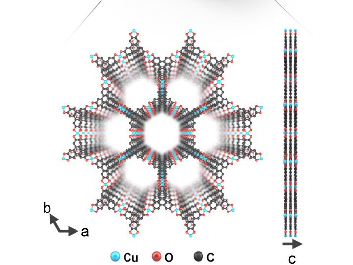
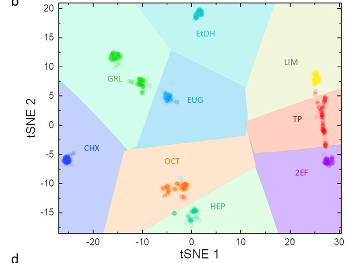
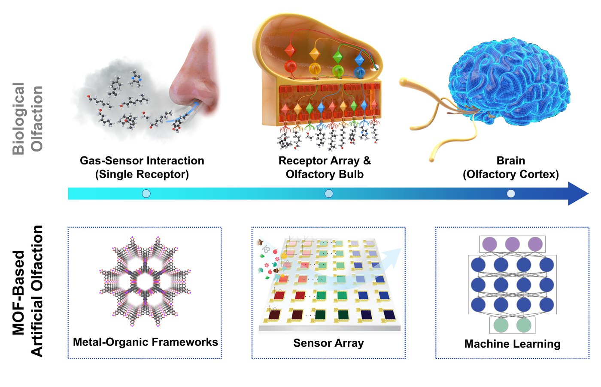
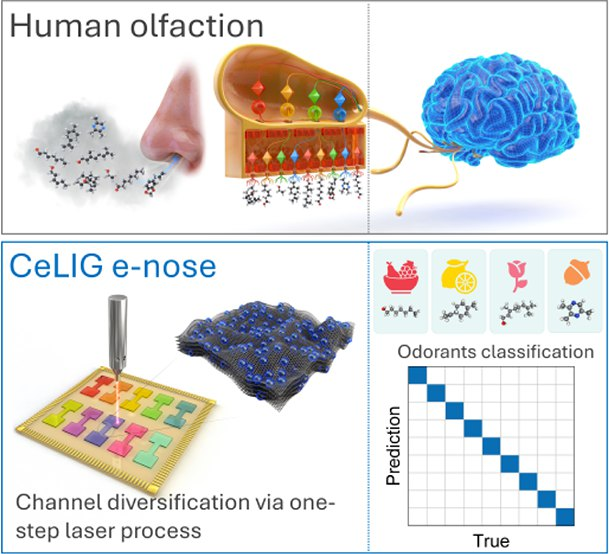

Postdoctoral Researcher (InnoCORE Fellow)
Hyeongtae Lim, Ph.D.
Department of Electrical Engineering and Computer Science
Daegu Gyeongbuk Institute of Science and Technology (DGIST)
Next-generation sensor systems for physical AI — porous materials, laser and semiconductor processing, and machine learning.
About Me
I am a postdoctoral researcher (InnoCORE Fellow) in the Department of Electrical Engineering and Computer Science at DGIST, Korea, where I received my Ph.D. in August 2026 under the supervision of Prof. Hyuk-Jun Kwon. My goal is to develop next-generation sensor systems for physical AI: hardware that lets machines perceive the physical and chemical world, and software that turns those signals into decisions.
My main testbed so far has been artificial olfaction. Smell is the least digitised of our senses. A nose does not have one receptor per molecule. It recognises an odor from the combined pattern of many partly selective receptors. Building an electronic nose therefore means making many chemically different sensors on one chip and decoding their joint response. That problem spans materials, fabrication and AI at once.
On the hardware side, I work with highly porous sensing materials: two-dimensional conductive metal–organic frameworks (MOFs), laser-induced graphene (LIG) and MOF-derived metal oxide/carbon composites. Their large surface area and tunable chemistry make room-temperature chemiresistive sensors that are both fast and sensitive.
These materials become devices through process engineering. I combine semiconductor microfabrication (photolithography, thin-film deposition, multichannel arrays on flexible substrates) with direct laser processing. UV-pulsed, CO2 and 532 nm CW lasers write porous graphene, embed catalytic nanoparticles in situ, or calcine MOF films into patterned oxide/carbon layers. Each pattern can receive its own laser dose, so the process itself programs chemical diversity across an array.
On the software side, I build machine-learning pipelines for multichannel time-series signals. They range from t-SNE/SVM classification to LSTM and CNN–Transformer models that read the transient response. These models recognise odors, their concentrations and mixtures in real time.
I am open to postdoctoral opportunities starting in September 2027.
Research
All research →
Artificial Olfactory Sensors
Electronic noses that recognise odors the way biology does — by reading a pattern across many partly selective sensors.

Laser Technology
Using the laser as a materials tool: mask-free, in air, and programmable channel by channel.

Metal–Organic Frameworks (MOFs)
Porous crystals designed molecule by molecule — and, when conductive, ideal room-temperature sensing layers.

Deep Learning for Sensor Signals
Turning multichannel sensor responses into odor identity, concentration and mixture composition.
Education & Experience
- Aug 2026 – presentPostdoctoral Researcher (InnoCORE Fellow)DGIST, Daegu, Korea
Artificial olfactory systems based on laser-processed porous materials. Advisor: Prof. Hyuk-Jun Kwon.
- Mar 2021 – Aug 2026Ph.D., Electrical Engineering and Computer ScienceDGIST, Daegu, Korea
Dissertation: Artificial Olfactory System Based on Chemiresistive Sensors with Highly Porous Materials. Advisor: Prof. Hyuk-Jun Kwon.
- Mar 2017 – Feb 2021B.S., Engineering (Interdisciplinary Studies)DGIST, Daegu, Korea
Other activities
- 2025 – present
Technology base of NeuroSense Co., Ltd., a DGIST tech-in-kind spin-off built on our laser-induced graphene electronic-nose patent (KR 10-2024-0193844)
- 2021 – present
Participating researcher, Convergence Research Advanced Centre for Olfaction (CRACO), DGIST
Skills
Laser processing
UV-pulsed, 532 nm CW and IR (CO2) lasers for graphene writing, oxidation, calcination, doping and machining
Materials synthesis
MOF growth (layer-by-layer, solvothermal, in situ), sol–gel polymer coating, rare-earth catalysts
Microfabrication
Photolithography, evaporation, sputtering; flexible devices with tensile and fatigue testing
Characterization
SEM, TEM/EDS, XRD, Raman, FT-IR, XPS, UPS, UV–Vis
Sensing
Multichannel chemiresistive gas-sensing systems, probe stations, mass-flow control
Data & ML
Python; t-SNE/SVM, LSTM and CNN–Transformer models for time-series sensor signals
Selected Publications
All publications →



Latest News
All news →-
Dec 3, 2026
Oral presentation at the 2026 MRS Fall Meeting, Boston
-
Aug 14, 2026
Ph.D. conferred by DGIST; started as InnoCORE Postdoctoral Fellow
-
Jul 13, 2026
Review in Progress in Materials Science covered by Phys.org and Korean media
-
Jun 27, 2026
Review published in Progress in Materials Science
-
Dec 26, 2025
NeuroSense Co., Ltd. launched as a DGIST tech-in-kind spin-off
-
Dec 16, 2025
Graduate School Outstanding Researcher Award, DGIST